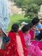

پذيرش > مقالات > خارج از چارچوب > مردي از جنس باران
 گزارشي از سازمان غير دولتي سپاه قدرت گزارشي از سازمان غير دولتي سپاه قدرت

 مردي از جنس باران مردي از جنس باران
26 بهمن 1387 - مونا محمدزاده - نسخه قابل چاپ
تغییر برای برابری - وارد هاريانا، استاني در نزديكي شهر دلهي نو شدم. هاريانا از استانهاي ثروتمند و سنتي هند است. هرچند كه در هر گوشه و كنار اين استان نيز همانند تمام هند؛ فقرا و مندرس پوشان فراواني هستند كه زير پل به دنيا ميآيند، بزرگ ميشوند، ازدواج ميكنند، بچهدار ميشوند و ميميرند.
شنيده بودم كه هند، مادر دموكراسي جهان است و حدود يك ميليون سازمان غير دولتي در آن مشغول به فعاليت هستند. سازمانها و مراكز بسياري در دلهي و اطراف آن پيدا كردم كه در حوزه زنان كار ميكردند. يكي از آن سازمانها "سپاه قدرت" است. اين سازمان در استان هاريانا و در ساختماني كهنه و اتاقهايي ساده، داير شده است.
ريشي يكي از مسئولان اين سازمان است. پر از گرمي و انرژي از "سپاه قدرت" ميگويد: "سپاه قدرت" از سال 1993 شروع به كار كرد. حوزه اصلي فعاليت اين سازمان در روستاهاست. چراكه 75% مردم هند، روستانشين هستند. دوازده هزار نفر عضو اين سازمان هستند. "سپاه قدرت" در زمينه قاچاق زنان و ايدز فعال است.
ريشي برايم انگيزههاي فعاليتش را شرح داد. او سالهاي پيش، زني 18 ساله را ميبيند كه برخلاف ميلش در يكي از روسپيخانههاي دلهي كار ميكند و هرروزه مورد آزار و خشونت و تجاوز قرار ميگيرد. ريشي از مسئول روسپيخانه ميخواهد كه زن را آزاد كند در غير اينصورت با پليس به آن محل غير قانوني ميرود ( در هند روسپي خانهها غيرقانوني و در محلاتي ناامن هستند). روز بعد ريشي با پليس به محل ميرود. اما دختر ناپديد شده بود. ريشي ديگر دختر را نديد. او خود را از همان روز مسئول ميبيند تا سازماني را تاسيس كند تا عليه قاچاق زنان (چراغ قرمز) مبارزه كند.
ريشي يكي از دلايل قاچاق زنان را فرار يا فقر آنان ذكر ميكند. بسياري از خانوادههاي فقير، دختران خود را ميفروشند و يا دختران روستايي به دليل در تنگنا قرار گرفتن در خانوادههايشان و نگاه به دنياي مدرن شهري و داستانهاي شيك و عاشقانهاي كه در فيلمهاي هندي ميبينند؛ به شهرها فرار ميكنند. قاچاقچيان زن در ابعاد مختلفي كار ميكنند. به عنوان مثال در استان هاريانا به دليل آنكه بسيار سنتي با مردمي كم سواد و مذهبي است، جنينكشي دختر رواج زيادي دارد، در نتيجه دختر در اين منطقه كم است. در عينحال بسياري از ثروتمندان در اين استان زندگي ميكنند. عدهاي از آنان، زنان را براي خدمتكاري در خانههاي اشرافي ميآورند. در بعدي ديگر قاچاقچيان از اين زنان كه يا آنها را دزديدهاند يا خريدهاند و يا سرپناهي براي آنها فراهم آوردهاند؛ به عنوان حملكنندههاي مواد مخدر استفاده ميكنند.
به تازگي پديدهاي در مناطق شمالي هند ظهور كرده است كه از زنان و كودكان براي عمليات بمبگذاري استفاده ميكنند. چراكه القاعده هنوز هم در كشمير و پاكستان فعال است. آنها زنان و كودكان را براي بمبگذاري و يا عمليات انتحاري آموزش داده تا در شرايطي كه تشخيص ميدهند، از آنان استفاده كنند.
از ريشي ميپرسم كه سازمان آنها چگونه از قاچاق زنان جلوگيري ميكند؟
ريشي با مثالي شروع ميكند. چندي پيش 149 دختر از يكي از ايالات هند به مالزي قاچاق شدند. سازمان "سپاه قدرت" كه توسط اعضاي زيادي كه در سرتاسر هند دارد، از اين انتقال زنان مطلع ميشود، به پليس هند فشار وارد ميكند كه بايد اين دختران را به هند بازگرداند. در هند انجمني وجود دارد براي روزنامهنگاران كه شامل 800 روزنامهنگار و خبرنگار است. كار اين انجمن خبررساني گسترده در سراسر هند، پس از گزارش سازمانهاي غيردولتي ميباشد. "سپاه قدرت" بعد از اطلاع از قاچاق زنان شروع به اطلاع رساني ميكند. بعد از پخش خبر، سازمانهايي كه در زمينه زنان كار ميكردند؛ دست به كار شده و خانههاي امن خود را آماده ورود زنان ميكنند. اين خبرها از طريق روزنامههاي سنگاپور هم اطلاع رساني ميشود. ما نام اين 149 زن را هيچ كجا ذكر نكرديم و حتي نگفتيم كه از كدام ايالت هستند. اما با اين حال زماني كه دختران به هند بازگردانده شدند، بسياري از خانوادهها ديگر حاضر به پذيرفتن دختران خود نبودند. ما با همكاري خانههاي امن زنان، بسياري از آنان را پوشش داديم. حتي يكي از آنان در جريان ربوده شدن، به اچ آي وي مثبت گرفتار شده است. ما از او حمايت كرده و وكلاي رايگان را به او معرفي كرده و تلاش كرديم تا از طريق شكايت از قاچاقچيان روشهاي مبارزه مدني را به خود زنان بياموزيم. اين زن امروز در يكي از مراكز "سپاه قدرت" مشغول به كار داوطلبانه است.
از او ميپرسم كه آيا خانوادهها، پيگيري يا شكايتي بعد از گم شدن دخترانشان ميكنند؟
ريشي به دو نكته اشاره كرد. او از پليس هند بسيار شكايت داشت و گفت كه پليس هند بسيار فاسد و بيتفاوت است. پليس در بسياري از موارد با قاچاقچيان و يا رؤساي روسپيخانهها همدست است. اما سازمانهاي غيردولتي آنقدر در هند زياد است و آنقدر در ميان مردم به رسميت شناخته شده اند كه پليس هند را مجبور به دخالت در امور ميكنند. بسياري از خانوادهها از ربوده شدن فرزندانشان شكايت ميكنند ولي به دليل آنكه بسيار فقير و پرجمعيت هستند، پليس آنان را به رسميت نشناخته و شكايت آنان را پيگيري نميكنند. تا آن زمان كه نهادهاي غير دولتي وارد عمل شوند و از طريق فشار اين سازمانها، پليس وادار به پيگيري ميشود. نكته قابل توجه بعدي اين است كه قاچاق دختران پديدهاي كاملا مخفي است. اسامي زنان براي به خدمتگيري در خانههاي اشراف يا كار در روسپيخانهها در جايي ثبت نميشود. درنتيجه آمار چندان دقيق نيست.
از او درباره محدوديتهايش پرسيدم و اينكه چه عواملي سد راه ادامه فعاليتش هستند؟
ريشي گفت كه كارشان بسيار سخت است اما او احساس خوبي را تجربه ميكرد. چراكه در كشوري فعاليت ميكند كه هيچ ممنوعيتي نه از طرف دولت و نه مردم براي ادامه كارش وجود ندارد. تهديد كننده هاي او تنها قاچاقچيان زنان و كودكان هستند. ريشي راه خود را انتخاب كرده است و به آن عشق ميورزد. او ميگويد براي من افتخار است كه در راه آزادي زنان جان خود را از دست بدهم. ترجيح ميدهم كه اينطور بميرم. تنها لبخند زنان و كودكان وقتي كه آزاد ميشوند؛ براي من كافيست تا هيچگاه خسته نشوم. ريشي مردي از جنس باران است. ته ريشي و سبزه چهره با چشماني گود. نگاهش اما عمقي بيشتر دارد. وقتي نگاه ميكند فراسويي در چشمانش موج ميزند كه نويد آيندهاي روشن است براي زنان.
ارسال به
بالاترین
،
توییتر
،
فریندفید
،
فیسبوک
در همين بخش :
 8 مارس روزی که نمی توان از ما دریغ کرد 8 مارس روزی که نمی توان از ما دریغ کرد
با طلاق توافقی از حقارت و کتک و فحش رها شدم /گزارشی از دادگاه محلاتی: مریم مالک
تجمع مادران عزادار در رشت
تغییر ممکن است/ جلوه جواهری(26 روز پس از بازداشت کاوه مظفری)
گامهایی که با تزلزل نا آشنایند/ گرامی داشت چهلم ندا در رشت
ديگر بخش ها :
طرح یک میلیون امضا
|
مقالات
|
سایت نوشته ها
|
اخبار
|
گزارش كمپين
|
گفت و گو
|
علیه سکوت
|
كوچه به كوچه
|
نامه های شما
|
گزارش ویژه
|
گفتگو با اعضا
|
ویژه سالگرد کمپین
|
تصویر برابری
|
دل آرام علی
|
تریبون
|
مقالات
|
تاریخ شفاهی
|
خارج از چارچوب
|
کتابخانه
|
درباره کمپین
|
کمپین در شهرها
|
کمپین در بند
|
صدای تغییر
|
ویژه 22 خرداد
|
لایحه حمایت از خانواده
|
گالری
|
عشا مومنی
|
امیر یعقوبعلی
|
خدیجه مقدم
|
راحله عسگری زاده و نسیم خسروی
|
پروین اردلان،جلوه جواهری، مریم حسین خواه، ناهید کشاورز
|
زینب پیغمبرزاده
|
سعیده امین، سارا ایمانیان، محبوبه حسین زاده، ناهید کشاورز و همایون نامی
|
احترام شادفر
|
نسیم سرابندی زاده،فاطمه دهدشتی
|
وبلاگ مهمان
|
پرونده خرم آباد
|
دستگیری ها
|
مریم مالک
|
پرستو اللهیاری
|
مهرنوش اعتمادی
|
سمیه رشیدی
|
Other Languages
|
همراهان
|
«فراخوان کمپین ده روز با بهاره هدایت»
| English
|